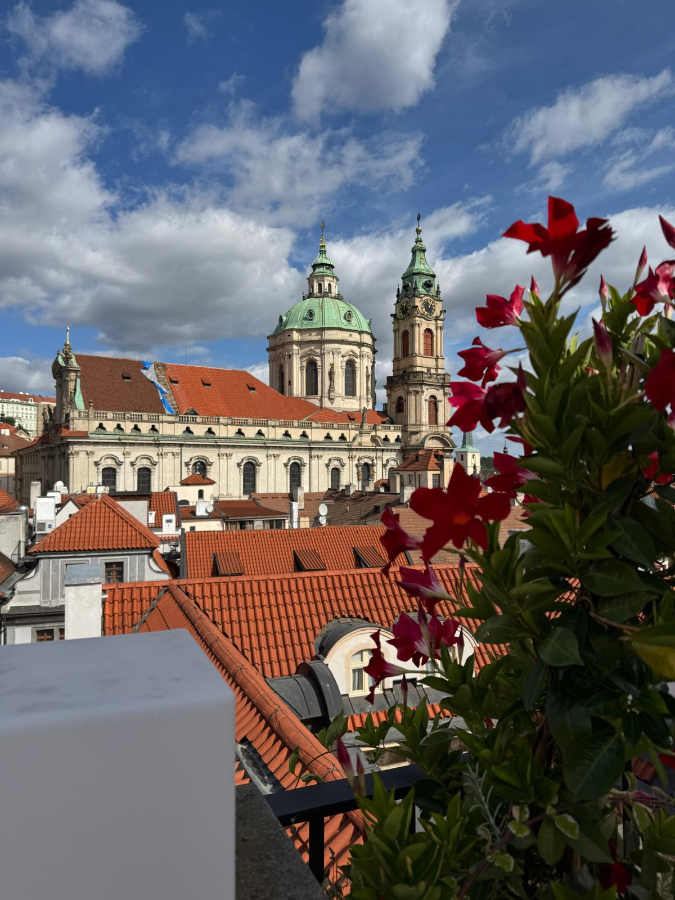

Von der Tropfsteinwand zur Karlsbrücke: fünf Geheimtipps auf zwei Kilometern
Dieser Spaziergang ist für alle, die die Karlsbrücke schon kennen und trotzdem noch nicht alles gesehen haben. Er führt vom Waldstein-Garten über den Teufelsbach auf die Brücke, mit einem Ritter, den fast niemand bemerkt, und einem Datum, das kein Zufall ist.


Ich führe Gäste durch die Kleinseite, seit ich Führungen mache, und finde trotzdem immer noch Dinge, die mich überraschen. Die fünf Stationen unten liegen alle auf einer Linie zwischen Metro Malostranská und der Karlsbrücke. Sie lassen sich gut an einen Vormittag auf der Burg anhängen.
Die Route
1. Die Tropfsteinwand im Waldstein-Garten
Eingang Letenská · April bis Oktober · Eintritt frei
Der Spaziergang beginnt im Waldstein-Garten, den Albrecht von Wallenstein zwischen 1623 und 1630 anlegen ließ. Steuern Sie direkt die lange Grottenwand am Rand an. Sie ist komplett künstlich, aus Stuck und Kalktuff, und genau so gewollt: Barocke Gärten bekamen solche wilden Felswände als Gegensatz zu den geschnittenen Hecken. Wer eine Weile davor stehen bleibt, entdeckt Fratzen, Schlangen und Tierköpfe im Stein.
Nebenan in der Voliere sitzen Uhus, auf dem Kies laufen Pfauen. Und die Bronzestatuen auf dem Parterre sind Kopien: Die Originale von Adriaen de Vries nahmen schwedische Soldaten 1648 als Kriegsbeute mit, sie stehen bis heute bei Schloss Drottningholm. Alles Weitere zum Garten, mit Rundgang und Öffnungszeiten, steht im Artikel Der Waldstein-Garten in Prag.
2. Die Čertovka und die Insel Kampa
10 Minuten zu Fuß vom Garten · frei
Verlassen Sie den Garten Richtung Fluss und gehen Sie die Cihelná hinunter, aber noch nicht auf die Brücke. Unter den Bögen der Karlsbrücke hindurch kommen Sie auf die Insel Kampa. Der schmale Kanal, der sie von der übrigen Kleinseite trennt, ist die Čertovka, der Teufelsbach. Benannt ist er der Legende nach nach einer zänkischen Müllersfrau, die hier wohnte.
Das Wasser wird seit dem Mittelalter aus der Moldau abgezweigt, und am Großprioratsplatz dreht sich noch heute das Mühlrad der Großpriorats-Mühle. Vom Nordende der Kampa, direkt unter den Brückenbögen, sehen Sie die Karlsbrücke von unten. Diesen Blick verpassen die meisten, weil sie schon oben stehen.

3. Bruncvík, der Ritter auf dem Pfeiler
Von der Kampa oder vom Brückengeländer aus sichtbar
Schauen Sie von der Kampa zum Pfeiler der Brücke, der auf der Insel steht. Auf einer Säule darüber steht eine einzelne Figur mit goldenem Schwert und dem Prager Wappen: Bruncvík, ein Ritter aus der böhmischen Sagenwelt. Die heutige Statue stammt von 1884 und ersetzt eine ältere, die bei einem Hochwasser zerstört wurde.
Der Legende nach besiegte Bruncvík mit einem Zauberschwert einen Drachen und gewann einen Löwen als Begleiter. Das Schwert soll in einem Pfeiler der Brücke eingemauert sein und erst wieder auftauchen, wenn Böhmen in größter Not ist. Ich erzähle das meinen Gästen als Sage, aber wer den Ritter übersieht, hat die Brücke nur halb gesehen.
4. Der Grundstein: 1-3-5-7-9-7-5-3-1
Am besten oben auf dem Altstädter Brückenturm erzählt
Gehen Sie jetzt die Treppe von der Kampa hinauf auf die Brücke. Ihren Grundstein legte Karl IV. am 9. Juli 1357. Schreibt man Jahr, Tag und Monat hintereinander und hängt die überlieferte Uhrzeit 5:31 an, ergibt sich 1357 9 7 5:31, eine Zahlenreihe, die vorwärts und rückwärts gleich ist.
Warum ausgerechnet dieser Moment?
Karl IV. glaubte an die Sterne, wie fast alle Herrscher seiner Zeit. Wichtige Bauten begann man nicht an irgendeinem Tag, sondern zu einer Stunde, die Astrologen als günstig berechnet hatten. Der Prager Astronomiehistoriker Zdeněk Horský hat das Datum im 20. Jahrhundert genauer untersucht. Nach seiner Deutung stand die Sonne an diesem Morgen in einer Konstellation mit dem Saturn, die als Zeichen für Dauer und Festigkeit galt. Genau das wünschte man sich für eine Brücke über einen Fluss, der seine Vorgängerin zerstört hatte.
Ob die Zahlenreihe selbst Absicht war, wissen wir nicht. Für das Datum gibt es mittelalterliche Quellen, die Uhrzeit 5:31 ist eine spätere Rekonstruktion. Ich erzähle meinen Gästen beides und lasse sie selbst entscheiden, wie viel Zufall sie Karl IV. zutrauen.
Die Linie zum Veitsdom
Deshalb erzähle ich die Geschichte am liebsten oben auf dem Altstädter Brückenturm. Von dort sehen Sie, dass die Brücke nicht genau quer über den Fluss läuft, sondern leicht schräg. Einige Forscher verbinden das mit dem Himmel: Um die Sommersonnenwende geht die Sonne, vom Turm aus gesehen, hinter dem Veitsdom unter, über dem Grab des heiligen Veit. Ob die Baumeister das geplant haben, ist umstritten. Für Karl IV., der den Dom und die Brücke gleichzeitig bauen ließ, wäre es ein passendes Bild gewesen: der Krönungsweg der böhmischen Könige von der Altstadt zur Burg, ausgerichtet auf den Schutzpatron des Landes.
Eier im Mörtel?
Die bekannteste Legende zum Bau: Damit der Mörtel besser hält, sollen Dörfer aus ganz Böhmen Eier nach Prag geschickt haben. Die Leute aus Velvary, so erzählt man sich in Prag bis heute, schickten sie vorsichtshalber hart gekocht, damit sie unterwegs nicht zerbrechen. Chemische Untersuchungen des Mörtels haben die Legende bisher weder eindeutig bestätigt noch widerlegt. Sicher ist nur, dass mittelalterliche Baumeister organische Zusätze wie Eier, Milch oder Quark kannten.
Gehalten hat es jedenfalls
Die Vorgängerin, die Judithbrücke aus dem 12. Jahrhundert, riss ein Hochwasser 1342 fort. Ein paar ihrer Reste stecken bis heute in Kellern der Kleinseite. Den Bau der neuen Brücke übernahm Peter Parler, der junge Baumeister, der gleichzeitig am Veitsdom arbeitete. Fertig war sie erst Anfang des 15. Jahrhunderts, also lange nach Karls Tod.
Seitdem hat sie einiges überstanden. Beim Hochwasser von 1890 stürzten zwei Pfeiler und mehrere Bögen ein, sie wurden innerhalb von zwei Jahren wieder aufgebaut. Beim Jahrhunderthochwasser 2002 stand das Wasser bis knapp unter die Bögen, die Brücke blieb aber stehen. Die hölzernen Eisbrecher vor den Pfeilern, die Sie von der Kampa aus sehen, schützen sie bis heute vor Treibgut und Eis.
5. Johannes von Nepomuk: Kreuz und Reliefs
Nordseite der Brücke, etwa in der Mitte
Am 20. März 1393 ließ König Wenzel IV. den Generalvikar Johannes von Nepomuk von der Brücke in die Moldau werfen. Nach der Legende hatte er sich geweigert, das Beichtgeheimnis der Königin preiszugeben. Die Stelle markiert ein kleines Messingkreuz an der Brüstung, zwischen den Statuen.
Seine Statue ist die älteste auf der Brücke, aufgestellt 1683. Die beiden Bronzereliefs am Sockel sind von Millionen Händen blank poliert, denn wer sie berührt, soll Glück haben und nach Prag zurückkehren. Ich sage meinen Gästen, dass es eine Legende ist. Berühren tun sie es trotzdem alle.

Route und beste Uhrzeit
Wer mehr von der Kleinseite sehen möchte, findet weitere Ideen in den drei geheimen Gärten der Kleinseite und in den besten Fotospots in Prag.
Häufige Fragen
Wo genau steht die Bruncvík-Statue?
Auf dem Brückenpfeiler über der Insel Kampa, auf der Südseite der Brücke. Am besten sehen Sie sie von der Kampa aus oder wenn Sie sich auf der Brücke über das Geländer lehnen.
Welches Nepomuk-Relief bringt Glück?
Die Besucher berühren beide Reliefs am Sockel seiner Statue. Das Kreuz an der Brüstung, das die Stelle seines Sturzes markiert, wird ebenfalls berührt. Ein Wunsch ist dabei erlaubt.
Ist der Spaziergang mit Kinderwagen machbar?
Größtenteils ja. Nur von der Kampa auf die Brücke führt eine Treppe. Mit Kinderwagen gehen Sie stattdessen über die Mostecká auf die Brücke.
Ist die Uhrzeit 5:31 belegt?
Das Datum 9. Juli 1357 ja, die genaue Uhrzeit beruht auf späteren Berechnungen und Überlieferungen.
Offizielle Seiten für aktuelle Angaben
- Senát: Waldstein-Garten, Öffnungszeiten
- Národní památkový ústav: Valdštejnská zahrada
- Prague City Tourism: Karlsbrücke und Brückentürme